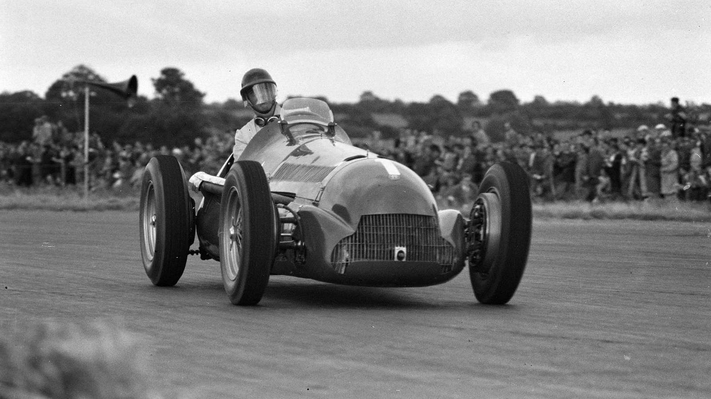
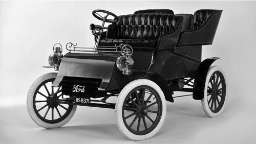

Історія автогонок
Історія автогонок США, Європи і навіть Радянського Союзу, найкращі гонки та гонщики в історії, дивні правила та технічні рішення команд усіх часів...
Історії відомих автовиробників
Як зародились відомі автовиробник? Чи знали ви, що один з автомобільних брендів створив Український біженець ...

Історія створення автомобіля
Як Франція закохала світ в авто. Як виглядали перші авто. Чому автомобілі вважались, в той час, най екологічнішим транспортом на світі. Як та навіщо придумали автомобіль?